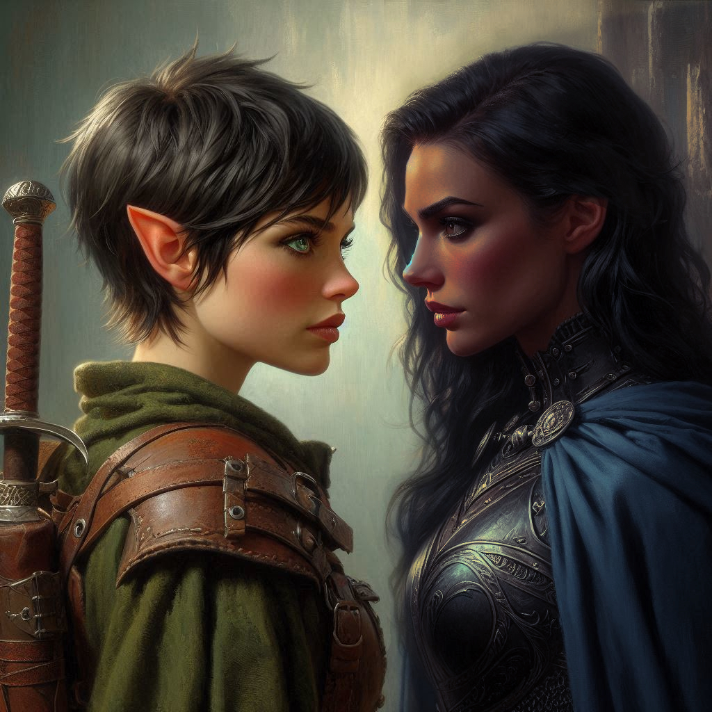

Feelings Long Surpressed

You are getting tired of being the subject of magical manipulation. First Hawthorn… then Jorsh. You shake your head and suck the cool night air in through your nostrils.
“Let’s go,” you say to Hawthorn, walking past her toward the sound of Hemlock Falls. She does not respond, but you can hear her light footsteps in the dry leaves and pine needles behind you. Finally, you come to the entrance of a cave on the side of the cliffs near the thundering Hemlock Falls. You know instantly this is the right place. The cave is flanked by giant elvish statues, overgrown with centuries of ivy and thick brush.
“In we go,” Hawthorn says, lighting a torch that she pulled from her pack. You’re not sure, but you think you saw a glimmer of fear in her eyes as she walked past you. The air inside Hemlock Caverns is damp and heavy, filled with the scent of earth and moss. Shadows flicker against the walls, cast by the flickering light of her torch as you press forward, deeper into the dark depths. Princess Hawthorn walks beside you, her face a mask of determination, but there’s something else lurking behind her sharp eyes—something you can’t quite place. The tension between you has been growing since the vision of Jorsh, and you’re not sure how much longer you can ignore it.
But before you can dwell on it further, a familiar voice echoes from the cavern entrance behind you. “Kira!”
You whirl around, heart skipping a beat. It’s Elias. You were definitely not expecting him to find you, but there is a part of you that is secretly glad to have a third wheel between you and Hawthorn.
Out of breath, Elias jogs toward you, his usual calm demeanor replaced by a mix of urgency and... something else. Relief washes over you at the sight of him, but it’s quickly replaced by confusion when you see the look in his eyes. There’s something different, something that makes your heart clench unexpectedly.
“Kira, thank the gods,” he pants, catching his breath. “I’ve been looking everywhere for you.”
You glance at Hawthorn, who has taken a step back, her eyes narrowing as she studies Elias. The tension is palpable, but you push it aside. “Elias, what’s happened? Why are you here?”
“I found Baider’s shop in ruins,” he says, his voice tight. “He’s been abducted, Kira. A band of mercenaries—dark elves, disguised as the Trade Ministry’s men. They took him.”
Your heart sinks. Baider, the gruff, distant father figure who raised you, was many things, but the thought of him in danger twists your stomach in knots. “Dark elves?” you whisper, eyes widening.
Elias nods. “I found a runic inscription in his shop. It’s a clue to where they’ve taken him—somewhere in the Realm of Shadows.”
The Realm of Shadows. The words send a shiver down your spine. You’ve heard the stories—an otherworldly dimension tied to dark magic and twisted beings, a place where only the strongest survive. And now, Baider is trapped there.
Before you can respond, Elias takes a step closer, his eyes softening in a way that makes your chest tighten. “Kira, I came for you... but I also came because I need to say something.”
He hesitates, and for a moment, the weight of his words hangs in the air, unspoken. You don’t dare breathe. He looks awkwardly at Hawthorn before taking a deep breath. Then, in a rush, the words tumble out.
“Kira, I love you.”
The world feels like it’s tilting. For a moment, you don’t know how to react, the weight of his confession pressing down on you like a storm. Love? You hadn’t expected this—any of this. The way Elias looks at you, raw and earnest, tugs at your heart, but it’s also overwhelming, confusing. You’ve never let anyone get this close before, never let anyone past your walls. Part of you is flattered deeply. Part of you is angry.
“I... Elias,” you start, your voice faltering. Guilt gnaws at you. Had you led him on without meaning to? You value Elias—he’s a true friend, someone you trust—but your heart is a tangled mess of emotions you can’t even begin to untangle.
He steps back slightly, his face softening with understanding. “I know this is a lot. I just—I needed you to know. I don’t expect anything. I just... I’ll always stand by you, no matter what.”
Your throat tightens as his words hit you. You feel the pressure of the moment crushing down, like you’re being pulled in a dozen directions at once. Do you let Elias in? Do you push him away to protect your heart? The weight of it all makes your chest ache.
Behind you, you can feel Hawthorn’s presence, lingering just outside of the conversation, but her silence speaks volumes. You can’t see her face, but you sense the shift in her energy—like something inside her has changed. You’re certain she overheard Elias’s confession, and for reasons you can’t fully explain, the tension between you and her feels even more complicated now.
Is it jealousy? Or something else?
Hawthorn speaks at last, her voice low but steady. “Kira, we don’t have time for distractions. We need to focus on finding the treasure. Baider... he’s important, but if we don’t find the treasure first, none of us may survive what’s coming.”
You glance between Elias and Hawthorn, torn. The weight of their expectations, their emotions, crushes you, and the decision before you looms larger than ever. Do you trust your heart with Elias, the boy who has always been by your side? Or do you bury those feelings, just as you’ve always buried everything else?
And perhaps more to the point, do you press forward with the mission to capture Jorsh, or do you rescue Baider, the gruff but caring giant that raised you as his own?
“We need to capture Jorsh,” Hawthorn says, as if reading your mind.
Elias grunts. You look at him as he holds up a rune stone. “I found this in Baider’s shop. I think it will transport us to his location.”
You take a deep breath and puff out your cheeks, holding your breath for a minute as Hawthorn and Elias stare at you. No pressure.